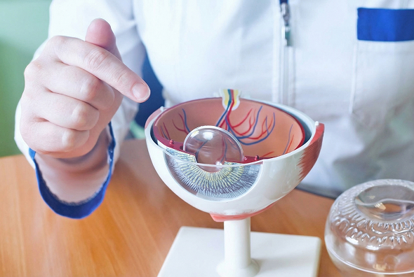
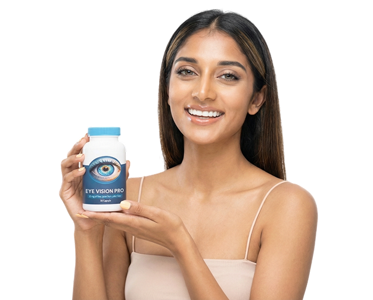
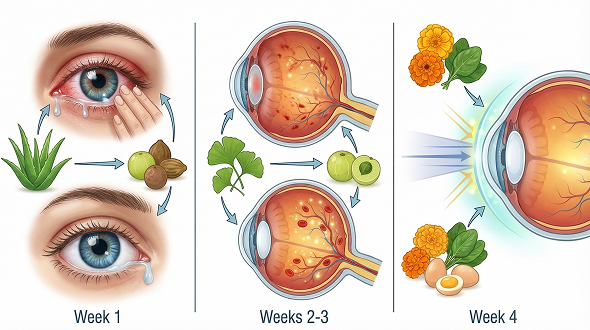
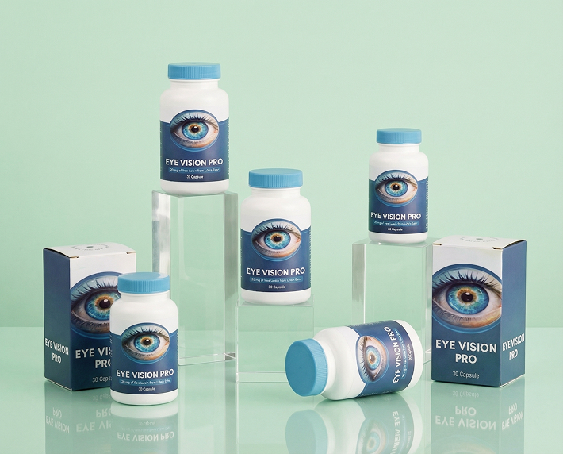
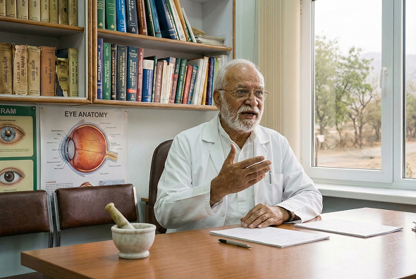

स्वास्थ्य / नेत्र विज्ञान / आयुर्वेद और विज्ञान / विशेषज्ञ साक्षात्कार


12.03.2026
"आप 60 साल की उम्र में भी अपनी आंखों की देखभाल कर सकते हैं।" नई दिल्ली के एक प्रसिद्ध नेत्र विशेषज्ञ ने हिमालय की तलहटी में रहने वाले भिक्षुओं के बुढ़ापे तक अपनी दृष्टि बनाए रखने के रहस्य का खुलासा किया है।
डॉ. राजेश वर्मा के साथ साक्षात्कार
उन्होंने नेत्र सूक्ष्म शल्य चिकित्सा के लिए 45 वर्ष समर्पित किए हैं और बताते हैं कि चश्मा एक "सहारा" क्यों है जो
इलाज नहीं करता है, और कैसे प्राचीन भारतीय ज्ञान और प्रौद्योगिकी के संयोजन ने दृष्टि बहाली के दृष्टिकोण को बदल
दिया है।
पढ़ने का समय:4 मिनट - विचार:142 500
डॉ. राजेश वर्मा के क्लिनिक में हमेशा अपॉइंटमेंट भरे रहते हैं। अपनी बढ़ती उम्र और एक बड़े क्लिनिक से आधिकारिक सेवानिवृत्ति के बावजूद, पूरे भारत से मरीज़ उनसे सलाह लेने आते हैं। हाल ही में उन्होंने एक नई नहीं, बल्कि...दृष्टि की देखभाल का एक पुराना, भुला दिया गया तरीका।यह नुस्खा उस विधि पर आधारित था जिसे डॉक्टर ने कई साल पहले हिमालय की तलहटी में अभ्यास करने वाले चिकित्सकों से सीखा था।
"जहां स्वच्छ हवा, सजगता और जड़ी-बूटियों का ज्ञान पीढ़ी दर पीढ़ी हस्तांतरित होता है, वहां 40 वर्ष की आयु के बाद दृष्टि संबंधी समस्याएं दुर्लभ होती हैं," डॉ. वर्मा ने हमारी बातचीत शुरू करते हुए कहा। "मैं किसी चमत्कार का वादा नहीं कर रहा हूं। मुझे किसी जादुई औषधि में दिलचस्पी नहीं थी, बल्कि एक सिद्धांत में थी। और वह सिद्धांत है समग्र पोषण और आंखों को भीतर से मजबूत करना, न कि केवल लक्षणों का इलाज करना।"
डॉ. वर्मा:नमस्ते। चलिए, "अपरिवर्तनीय बुढ़ापा" जैसे डरावने शब्दों को भूल जाइए। आपकी आँखों में जो हो रहा है वह
शारीरिक है, मृत्यु का फरमान नहीं।
आँख एक जटिल प्रकाशीय प्रणाली है जो पूरी तरह से रक्त आपूर्ति पर निर्भर करती है। एक स्पंज की कल्पना कीजिए। गीला
होने पर यह लचीला होता है और आसानी से अपना आकार बदल लेता है। सूखने पर यह कठोर और भंगुर हो जाता है।
जैसे-जैसे हमारी उम्र बढ़ती है, लगभग 40 वर्ष की आयु के आसपास, दो प्रमुख प्रक्रियाएं घटित होती हैं:
1. लेंस का मोटा होना। यह अपनी लोच खो देता है और जल्दी से ध्यान केंद्रित नहीं कर पाता
(समायोजन)।
2. सूक्ष्म रक्त संचार विकार। रेटिना और फंडस को रक्त की आपूर्ति करने वाली छोटी-छोटी
केशिकाएं अवरुद्ध हो जाती हैं, भंगुर हो जाती हैं या उनमें ऐंठन आ जाती है।
इसके परिणामस्वरूप, आंखों को पर्याप्त पोषण नहीं मिल पाता। कोशिकाएं कमजोर होकर मरने लगती हैं। स्मार्टफोन से निकलने
वाली नीली रोशनी भी इसमें जुड़ जाती है, जो रेटिना के केंद्र (मैक्युला) को नुकसान पहुंचाती है, और हमें धुंध,
धब्बे, सूखापन और ध्यान केंद्रित करने में कठिनाई जैसी समस्याएं हो जाती हैं।

रिपोर्टर: डॉक्टर साहब, बहुत से लोग शिकायत क्यों करते हैं कि फार्मेसी से मिलने वाली ड्रॉप्स सिर्फ अस्थायी रूप से ही आराम देती हैं?
डॉ. वर्मा: अधिकांश ड्रॉप्स लक्षणों के आधार पर काम करते हैं:
- मॉइस्चराइज़ करें
- लालिमा से राहत
- जलन को कम करें
लेकिन वे आँखों के ऊतकों के पोषण में अंदर से सुधार नहीं होता है। रक्त प्रवाह में सहायता
और एंटीऑक्सीडेंट सुरक्षा के बिना, रिकवरी असंभव है।
"इसीलिए आयुर्वेद में आंखों के स्वास्थ्य को हमेशा शरीर के समग्र संतुलन का एक हिस्सा माना गया है।"
रिपोर्टर: आप अक्सर आयुर्वेद के ज्ञान का जिक्र करते हैं। आपका इससे क्या तात्पर्य है?
डॉ. वर्मा: आधुनिक विज्ञान के अध्ययन में मैंने कई वर्ष व्यतीत किए हैं, इसलिए मैं उसका बहुत सम्मान करता हूँ। लेकिन लोगों को अपनी दृष्टि सुधारने के लिए सर्जरी करवाते देखना बहुत दुखद था। क्या सच में इतने वर्षों से शोध चल रहा है और अभी तक आँखों के लिए कोई अच्छा इलाज नहीं मिल पाया है? इसलिए मैंने भारतीय आयुर्वेद का और अधिक अध्ययन करना शुरू किया। मैं कोई नई खोज नहीं कर रहा था। दृष्टि सुधारने के कई नुस्खे सैकड़ों वर्षों से आयुर्वेदिक ग्रंथों में वर्णित हैं।
रिपोर्टर: जी हाँ, मुझे याद है कि आपके व्याख्यानों में आप अक्सर इस बारे में बात करते थे कि प्रकृति ने हमें वह सब कुछ पहले ही दे दिया है जिसकी हमें आवश्यकता है। इसके बारे में हमें बताइए। क्या यह सच है कि आपको हिमालय में इसका समाधान मिला?
डॉ. वर्मा: (हंसते हुए) मैं फिल्मों की तरह खजाने की तलाश नहीं कर रहा था। लेकिन इसमें
थोड़ी सच्चाई तो है।
कई साल पहले, मैंने हिमाचल प्रदेश के एक मठ का दौरा किया था। मैं वहाँ के भिक्षुओं को देखकर बहुत प्रभावित हुआ, जो
दिन भर मोमबत्ती की रोशनी में प्राचीन ग्रंथों की नकल करते रहते थे और 80-90 वर्ष की आयु में भी चश्मा नहीं पहनते
थे। मैंने उनके खान-पान और उनके द्वारा लिए जाने वाले हर्बल उपचारों का अध्ययन करना शुरू किया।
उनके स्वास्थ्य का आधार वे जड़ी-बूटियाँ थीं जिन्हें हर भारतीय जानता है:
आंवला (भारतीय आंवला) और त्रिफलाआयुर्वेद में इनका उपयोग हजारों वर्षों से होता आ रहा है।
लेकिन एक समस्या है: आंखों के लिए इन औषधीय गुणों का लाभ उठाने के लिए आपको इन्हें बहुत अधिक मात्रा में खाना
पड़ेगा, क्योंकि इनमें प्राकृतिक रूप से सक्रिय तत्वों की मात्रा कम होती है और ये पेट में जाकर नष्ट हो जाते हैं।
रिपोर्टर: तो, सिर्फ जामुन खाना बेकार है?
डॉ. वर्मा: बेकार तो नहीं, लेकिन बहुत प्रभावी भी नहीं।इलाजरोकथाम के लिहाज से तो यह बहुत
अच्छा है। लेकिन जब दृष्टि पहले से ही खराब होने लगे, तो आपको "गंभीर उपचार" की आवश्यकता होती है।
यहीं पर आधुनिक विज्ञान ने हमारी मदद की। हमने कुछ नया आविष्कार नहीं किया; हमने प्रकृति से सर्वोत्तम चीजें लीं।
बैंगलोर स्थित जैव रसायन संस्थान के साथ मिलकर हमने इस पद्धति का प्रयोग किया।
ठंडे एंजाइमेटिक निष्कर्षण.
यह तकनीक हमें पौधों से सक्रिय पदार्थों (फ्लेवोनोइड्स, ल्यूटिन, ज़ेक्सैंथिन) का शुद्ध सांद्रण निकालने और उन्हें
जीवित रखने की अनुमति देती है।
EYE VISION PRO एक सर्टिफाइड न्यूट्रास्युटिकल कॉम्प्लेक्स है, जिसमें एक पुराने फ़ॉर्मूले को मॉडर्न बायोटेक्नोलॉजी से बेहतर बनाया गया है।

यह इस तरह दिखाई दियाआई विजन प्रोयह महज कोई "दादी माँ का नुस्खा" या किसी प्रयोगशाला में बनी "रासायनिक गोली" नहीं है। यह एक प्रमाणित न्यूट्रास्यूटिकल कॉम्प्लेक्स है, जिसमें एक प्राचीन फार्मूले को आधुनिक जैव प्रौद्योगिकी द्वारा और भी बेहतर बनाया गया है।
रिपोर्टर: आइए इसे अपने पाठकों को सरल शब्दों में समझाते हैं। अगर कोई EYE VISION PRO लेना शुरू करता है, तो उसके शरीर में वास्तव में क्या होता है?
- सप्ताह 1: सफाई और सूजन कम करना। सक्रिय तत्व (विशेष रूप से एलोवेरा का अर्क और त्रिफला) आंसू नलिकाओं और ऑप्टिक तंत्रिका की सूजन को कम करते हैं। आंखों में सूखापन, लालिमा और ऑफिस में काम करने वालों को अक्सर होने वाली किरकिरी सनसनी से राहत मिलती है। बस आपको बार-बार आंखें मलने की जरूरत नहीं पड़ती।
- सप्ताह 2-3: सूक्ष्म रक्त संचार को बहाल करना। यहीं पर जिन्कगो बिलोबा और आंवला के अर्क की भूमिका सामने आती है। ये छोटी रक्त वाहिकाओं की दीवारों को मजबूत करते हैं और रक्त प्रवाह में सुधार करते हैं। ऑक्सीजन और पोषक तत्व फिर से रेटिना तक पहुंचने लगते हैं। इस अवस्था में कई मरीज बताते हैं कि उनकी दृष्टि "तेज" और स्पष्ट हो जाती है, और धुंधली दृष्टि गायब हो जाती है।
- सप्ताह 4: संरक्षण और पुनर्जनन। आवश्यक मात्रा में ल्यूटिन और ज़ेक्सैंथिन जमा हो जाते हैं। ये प्राकृतिक प्रकाश फिल्टर लेंस को धुंधला होने से और रेटिना को उम्र बढ़ने से बचाते हैं।

रिपोर्टर: प्रोफेसर साहब, बहुत से लोग सोचते हैं कि अगर उन्हें सिर्फ थोड़ा सा वजन बढ़ा हुआ महसूस हो रहा है या कंप्यूटर पर काम करने से थकान हो रही है, तो गंभीर सप्लीमेंट्स लेने का अभी सही समय नहीं है। यह कॉम्प्लेक्स किसके लिए बनाया गया है?
- आयु संबंधी परिवर्तन (40-45 वर्ष के बाद): जब छोटे अक्षरों को पढ़ना, सिलाई करना या बारीक काम करना मुश्किल हो जाता है।
- डिजिटल थकान: यदि आप अपने स्मार्टफोन या कंप्यूटर पर प्रतिदिन 3 घंटे से अधिक समय बिताते हैं, तो जलन, सूखापन और लालिमा इस बात के संकेत हैं कि आपकी रेटिना सचमुच "जल रही है"।
- रात में गाड़ी चलाना: यदि आपको शाम के समय सड़क देखने में कठिनाई होती है या सामने से आ रही गाड़ियों की तेज रोशनी से आपकी आंखें चौंधिया जाती हैं (जिसे "रतौंधी" कहा जाता है)।
- जटिलताओं की रोकथाम: यदि आपको आनुवंशिक रूप से ग्लूकोमा या मोतियाबिंद होने की संभावना है।
रिपोर्टर: आपने आयुर्वेद का जिक्र किया। क्या आप बता सकते हैं कि इसमें वास्तव में क्या शामिल है? आई विजन प्रोहमारे पाठक यह जानना चाहते हैं कि उन्हें क्या मिल रहा है।
- आंवला का अर्क (एम्ब्लिका ऑफिसिनैलिस): एक शक्तिशाली एंटीऑक्सीडेंट। इसमें संतरे से 20 गुना अधिक विटामिन सी होता है। यह गर्भाशय के निचले हिस्से में रक्त वाहिकाओं को मजबूत करता है, जिससे उनकी कमजोरी दूर होती है।
- ल्यूटीन और ज़ेक्सैंथिन (गेंदे के फूलों की पंखुड़ियों से): ये एकमात्र कैरोटीनॉयड हैं जो सीधे रेटिना में जमा होsते हैं। ये "आंतरिक धूप के चश्मे" की तरह काम करते हैं, स्क्रीन से निकलने वाली हानिकारक नीली रोशनी को अवशोषित करते हैं।
- त्रिफला (तीन फलों का मिश्रण): ऊतकों की सफाई का एक प्राचीन रहस्य। यह आंख के विट्रियस भाग में जमा होने वाले विषाक्त पदार्थों को हटाने में मदद करता है, जो आंखों में तैरने वाले धब्बों का कारण बनते हैं।
- जस्ता और बी विटामिन: ये आंखों से मस्तिष्क तक तंत्रिका आवेगों को संचारित करने के लिए आवश्यक हैं। ताकि छवि न केवल स्पष्ट हो, बल्कि मस्तिष्क द्वारा तुरंत संसाधित भी हो सके।
महत्वपूर्ण नोट: हम केवल मानकीकृत अर्क का उपयोग करते हैं। इसका अर्थ है कि प्रत्येक कैप्सूल में शरीर के लिए आवश्यक सक्रिय तत्व की सटीक मात्रा होती है। घर पर जड़ी-बूटियों को उबालकर ऐसा करना असंभव है।
रिपोर्टर: यह सबसे अधिक पूछा जाने वाला प्रश्न है। यदि यह दवा इतनी प्रभावी है और विशेषज्ञों द्वारा अनुमोदित है, तो मैं इसे पास की फार्मेसी से क्यों नहीं खरीद सकता?
डॉ. वर्मा: (आह भरते हुए) यही हमारे बाजार की कड़वी सच्चाई है। प्रमुख फार्मेसी
श्रृंखलाओं की अलमारियों तक पहुंचने के लिए, निर्माता को बिचौलियों और विज्ञापन के लिए भारी "लाभ" को कीमत में शामिल
करना पड़ता है।
काश आई विजन प्रोअगर यह दवा फार्मेसियों के माध्यम से बेची जाती है, तो दिल्ली या मुंबई
में इसकी कीमत बहुत अधिक होगी।रुपयेइससे यह आम पेंशनभोगियों, शिक्षकों और श्रमिकों के लिए दुर्गम हो जाएगा।
हमने एक अलग तरीका अपनाया। हमने बिचौलियों को हटा दिया और सीधे दवा बेच रहे हैं।
सीधे आधिकारिक वेबसाइट के माध्यम सेइससे हमें यह सुविधा मिलती है:
- गुणवत्ता नियंत्रण (नकली उत्पादों का निषेध)।
- कीमत उचित रखें।
- उन सब्सिडी कार्यक्रमों में भाग लें जिनमें लागत का एक हिस्सा स्वास्थ्य सेवा विकास निधि द्वारा कवर किया जाता है।
रिपोर्टर: इलाज की प्रक्रिया कितनी कठिन है? क्या इसमें कोई विशेष आहार अनिवार्य है?
- मात्रा: भोजन के साथ प्रतिदिन 1 कैप्सूल लें।
- कुंआ: दीर्घकालिक परिणाम प्राप्त करने के लिए, मैं 30 से 60 दिनों के कोर्स की सलाह देता हूँ। इससे ऊतकों में ल्यूटिन की मात्रा पर्याप्त रूप से बढ़ जाती है और रक्त प्रवाह बहाल हो जाता है।
- किसी सख्त आहार की आवश्यकता नहीं है, लेकिन मैं हमेशा मरीजों को अधिक शुद्ध पानी पीने की सलाह देता हूं - यह सूक्ष्म रक्त संचार में मदद करता है।
रिपोर्टर: डॉक्टर साहब, शोध के नतीजे तो प्रभावशाली हैं। लेकिन मरीज़ खुद क्या कहते हैं?
डॉ. वर्मा: आप जानते हैं, मेरे लिए सबसे बड़ा इनाम ग्राफ नहीं, बल्कि मेरे मरीजों द्वारा भेजे गए संदेश हैं। यहाँ देखिए (फोन की स्क्रीन दिखाते हुए)।
मरीजों से सूचनाएं

अखिल भारतीय आयुर्वेद विज्ञान संस्थान (AIIMS) के आंकड़े:
महानगरों में रहने वाले 45 वर्ष से अधिक आयु के 78% भारतीय निवासियों में ल्यूटिन और ज़ेक्सैंथिन की कमी पाई जाती है। यह कमी 10 में से 9 मामलों में समय से पहले मोतियाबिंद का कारण बनती है।आई विजन प्रो कॉम्प्लेक्स एक ही खुराक में इन पदार्थों की दैनिक आवश्यकता की पूर्ति करता है।
रिपोर्टर: प्रोफेसर साहब, हमें पता है कि भारतीय निवासियों के लिए एक विशेष कार्यक्रम लागू है। क्या आप हमें इसके बारे में और जानकारी दे सकते हैं?
डॉ. वर्मा: जी हां, हमने वितरक के साथ मिलकर एक प्रचार अभियान शुरू किया है।
"राष्ट्र की स्पष्ट दृष्टि" इस सप्ताह के अंत तक, देश का कोई भी निवासी 50% तक की छूट के
साथ कोर्स ऑर्डर कर सकता है।50%.
यह कम उम्र में दृष्टि हानि के खिलाफ लड़ाई में हमारा योगदान है। हम चाहते हैं कि हर भारतीय, चाहे उसकी आय कितनी भी
हो, उच्च गुणवत्ता वाली स्वास्थ्य सेवा प्राप्त कर सके।

रिपोर्टर: हमारे पाठकों को क्या करना चाहिए?
- कृपया नीचे अपना अनुरोध जमा करें। अपना नाम और संपर्क फ़ोन नंबर अवश्य शामिल करें।
- ऑपरेटर के कॉल का इंतज़ार करें। हमारे सलाहकार आपके सवालों के जवाब देंगे, डिलीवरी का पता और अंतिम लागत की पुष्टि करेंगे।सभी उपलब्ध छूटों को ध्यान में रखते हुए.
- अपना पार्सल प्राप्त करें और उसकी जांच करें। भुगतान केवल डाकघर या कूरियर कंपनी को पार्सल प्राप्त होने पर ही करें
ध्यान: भुगतान केवल किया जाता हैप्राप्त होने पर (कैश ऑन डिलीवरी)। आपको कोई जोखिम नहीं है। हम जम्मू से केरल तक, किसी भी राज्य में पार्सल भेजते हैं।
आधिकारिक आवेदन पत्र
EYE VISION PRO सिर्फ़ ₹999 की कीमत पर पाएं
कंसल्टेशन पाने और EYE VISION PRO को 50% डिस्काउंट के साथ ₹1998 से सिर्फ़ ₹999 में बुक करने के लिए, नीचे दिए गए फ़ील्ड में अपना नाम और कॉन्टैक्ट डिटेल्स डालें और "नोटिफ़िकेशन भेजें" बटन पर क्लिक करें।

गारंटी और सुरक्षा
- प्रमाणन: उत्पाद की गुणवत्ता की जांच की गई है और यह भारतीय खाद्य योजक सुरक्षा मानकों का अनुपालन करता है।
- स्वाभाविकता: 100% हर्बल। इसकी आदत नहीं पड़ती।
- गोपनीयता: आपका डेटा सुरक्षित है और इसे किसी तीसरे पक्ष को नहीं दिया जाता है।
जिन लोगों ने पहले ही EYE VISION PRO आज़माया है, वे क्या कहते हैं